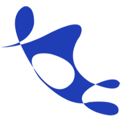
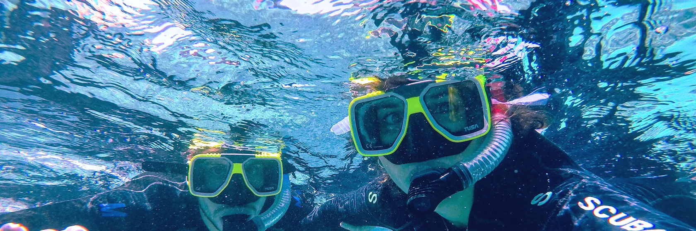
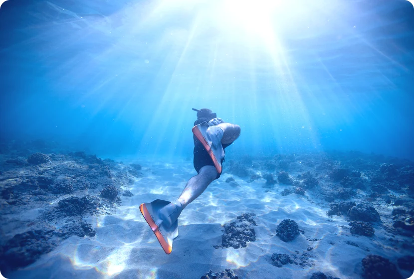
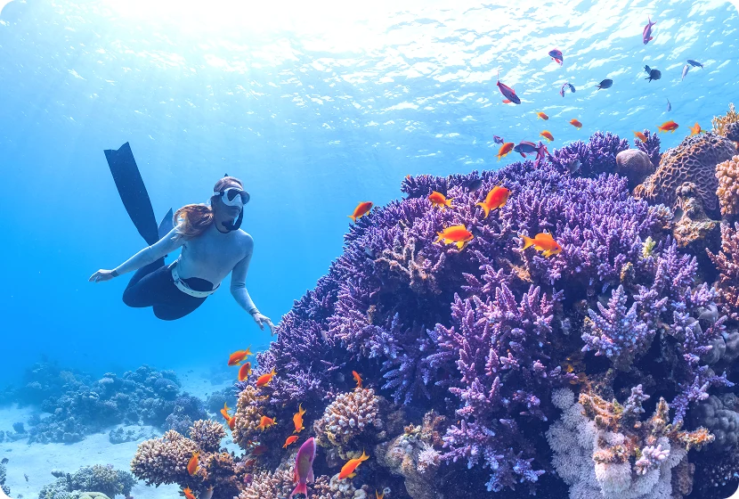
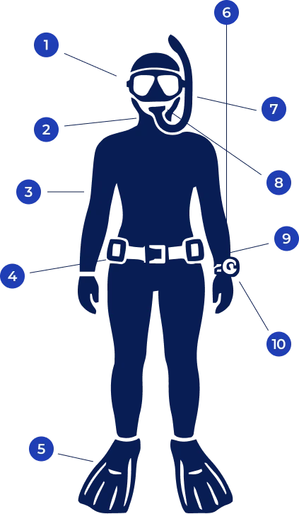

공기통 없이 오직 자신의 폐에 담긴 한 모금의 숨에 의지해 깊은 심연으로 하강합니다. 장비의 소음이 없는 완벽한 정적 속에서 바다와 온전히 하나가 되는 일체감을 느끼며, 물의 저항을 최소화한 채 매끄럽게 움직이는 신체의 역동성을 경험합니다. 외부 세계보다 자신의 내면과 호흡에 집중하게 되는 명상적인 스포츠입니다.
Key Focus
숨을 참는 동안 느껴지는 몸의 신호를 이해하고, 효율적인 이퀄라이징 기술과 피닝 기법을 익힙니다.
Recommendation
장비의 구속 없이 자유로운 움직임을 원하는 분, 인어처럼 자유로운 실루엣의 수중 인생샷을 남기고 싶은 분



물속을 보기 위해 쓰는 안경입니다. 눈과 코를 덮는 형태로 '마스크'라 부릅니다. 물속에서도 선명한 시야를 확보하는 장비입니다. 스쿠버용보다 내부 부피가 작은 '저부피 마스크'를 주로 씁니다. 코 주머니가 말랑해야 이퀄라이징이 쉽습니다.
허리 대신 목에 차는 무게추입니다. 하강 시 몸의 자세를 수직으로 잡는 데 도움을 줍니다.
체온 유지와 피부 보호를 위해 입는 옷(웻슈트/드라이슈트)입니다.체온 유지와 부력 보조를 위해 입습니다. 신축성이 좋은 오픈셀(Open-cell) 소재를 많이 사용합니다.
물속으로 가라앉기 위해 허리에 차거나 BCD에 넣는 납 덩어리입니다.프리다이버는 고무 재질의 신축성 벨트를 사용하여 깊은 수심에서 슈트가 압착되어도 벨트가 돌아가지 않게 합니다.
물속에서 추진력을 얻기 위해 발에 착용하는 장비입니다.스쿠버 핀보다 훨씬 긴 오리발입니다. 한 번의 발차기로 더 멀리, 효율적으로 나아가게 해줍니다.
수면에 띄워놓는 안전 도넛입니다. 손목에 착용하는 랜야드와 연결됩니다.다이버가 쉬거나 로프를 고정하는 거점 역할을 합니다.
수면에서 숨을 쉴 때 사용하는 대롱입니다.호흡 저항이 적고 단순한 형태를 선호합니다. 입수 직전에는 입에서 빼는 것이 원칙입니다.
코를 잡아주는 집게입니다. 손을 쓰지 않고 이퀄라이징을 하거나 마스크 없이 다이빙할 때 사용합니다.
다이버와 안전 로프를 연결하는 생명줄입니다. 시야가 흐리거나 깊은 수심을 탈 때 필수입니다. 수면에 떠있는 부이와 연결되어 있습니다.
현재 수심, 잠수 시간, 무감압 한계 시간 등을 계산해 주는 필수 손목 장비입니다.수심, 시간, 감압 상태 등을 자동으로 계산해 보여주는 장비입니다. 안전한 다이빙을 위해 상승 속도와 휴식 시간을 안내합니다.수심과 잠수 시간은 물론, 수면 휴식 시간을 초 단위로 알려주는 프리다이버의 생명줄입니다.
다이빙은 한 번의 교육으로 끝나는 활동이 아니라 단계별 교육과 경험을 통해 성장하는 활동입니다. BlueBuddy와 함께 기초 교육부터 실제 바다에서의 실습, 그리고 프로 레벨까지 이어지는 교육 과정을 통해 안전하고 능숙한 다이버로 성장할 수 있습니다.
ⓒ Copyright by JinGanJang